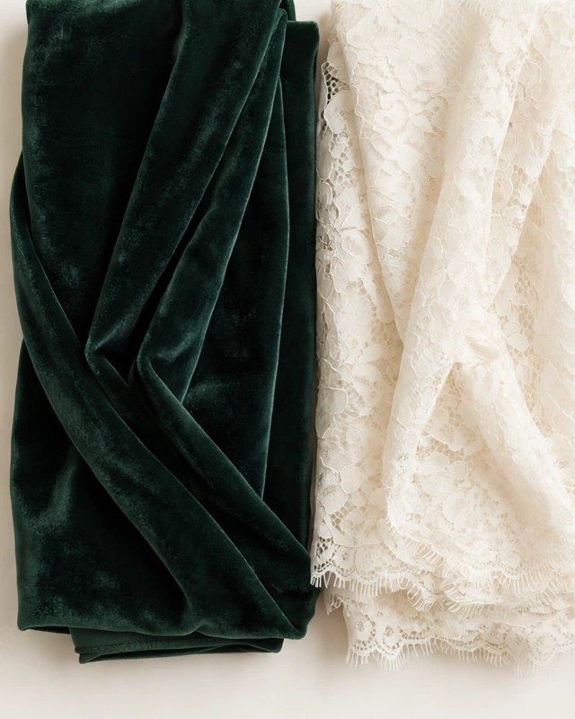

Modest Fashion • Holiday Party Outfits
20 Modest Holiday Party Outfits: Elegant Festive Looks
Holiday party season is the one time of year when modest dressing gets to be unapologetically glamorous — and it does not need a single sequin to do it. Velvet, satin, faux fur, lace and jewel tones bring all the festive drama on their own, with full coverage and zero compromise.
These 20 modest holiday party outfits are built for real December evenings in the US — office parties, family gatherings, dinner with friends and New Year celebrations — and every one pairs with the winter hijab wraps in our winter hijab styles guide. Pick your fabric first, then your colour: the glamour follows.

Velvet Evening Looks (1–4)
1. The Emerald Velvet Abaya
A floor-length emerald velvet abaya with a matching velvet hijab, finished with a slim metallic belt. Velvet reads evening instantly, and emerald is the jewel tone that photographs best under party lights.
2. Burgundy Velvet + Gold Accents
A burgundy velvet abaya with gold-toned jewellery and a gold clutch. Keep the hijab plain velvet in the same burgundy so the gold does the sparkling, not the fabric.
3. Navy Velvet with Lace Trim
A navy velvet abaya with a lace-trimmed hem or lace-edged hijab. Lace abaya designs were a measured +350% rising query (2026-10-29), and lace softens velvet’s weight beautifully.
4. The Velvet Co-ord Set
A velvet top with wide-leg velvet trousers or a long velvet skirt, worn with a silk-touch hijab. A co-ord feels modern and party-ready while staying fully modest.
Satin & Silk Elegance (5–8)
5. The Champagne Satin Abaya
A champagne or pearl satin abaya with a satin-finish hijab in the same tone. Satin is a 2026 trend fabric, and a single-tone satin look reads expensive with almost no styling effort.
6. Satin Slip Dress, Modestly Layered
A satin slip dress worn under an open abaya or long kimono-style layer, with full sleeves underneath. The slip brings the shine; the outer layer keeps it modest.
7. Black Satin + Metallic Belt
A black satin abaya cinched with a thin metallic belt and metallic heels. The belt is the whole trick: it turns a simple black abaya into a party outfit in one step.
8. Blush Satin with an Embroidered Hijab
A blush satin abaya paired with a hijab that has subtle embroidery or a beaded edge. Soft colour, one detailed piece, calm everywhere else.
Festive Hijab Styling (9–12)
9. Velvet Hijab + Metallic Pin
A deep velvet hijab (plum, emerald or navy) with one metallic or pearl pin at the shoulder. The pin is the jewellery — no necklace needed.
10. Silk-Touch Hijab with Pearl Pins
A smooth silk-touch hijab secured with small pearl pins along the frame. Pearls catch the light gently and suit every skin tone.
11. Lace-Trim Hijab for Celebrations
A hijab with a lace edge or lace overlay, worn with a velvet or satin abaya. The lace does the festive work so the outfit can stay simple.
12. Jewel-Tone Hijab + Neutral Abaya
A jewel-tone hijab (ruby, teal or emerald) over a cream or black abaya. When the hijab is the colour, the abaya can be the calm base — the easiest party formula there is.
Faux Fur & Cozy Glam (13–16)
13. Faux Fur Stole over Velvet
A faux fur stole draped over a velvet abaya for winter parties. Warm, dramatic, and it comes off indoors to reveal the outfit underneath.
14. Faux Fur-Trim Coat + Satin Abaya
A long coat with a faux fur trim worn over a satin abaya. The coat is the party piece on the way in; the satin is the party piece once it comes off.
15. Cream Faux Fur Jacket + Jewel-Tone Hijab
A cream faux fur jacket with a ruby or emerald hijab and dark wide-leg trousers. Cream and jewel tones together read festive without any shine at all.
16. Faux Fur Collar + Monochrome Party Look
A monochrome black or navy outfit with a faux fur collar or cuffs. Texture contrast (fur + velvet + satin) keeps a single colour from ever looking flat.
Jewel Tones & Party Classics (17–20)
17. The All-Black Party Look
Black velvet abaya, black satin hijab, black heels — with texture contrast (velvet + satin + faux fur) so the monochrome never looks plain. Add one metallic clutch and you are done.
18. Ruby Red Modest Party Dress
A ruby red long dress or abaya with a matching ruby hijab and nude heels. Red is the classic holiday colour; one bold piece is enough — keep everything else quiet.
19. Teal + Gold Two-Tone
A teal abaya with gold accessories: gold belt, gold clutch, gold-toned hijab pin. Two tones, one rule: the gold stays in the accessories, never in the fabric.
20. The Monochrome Cream Party Look
Cream satin abaya, cream hijab, cream heels, with a single jewel-tone clutch or pin for contrast. Cream reads soft and expensive under warm party lighting, and it photographs beautifully.
Modest Holiday Party Styling Tips
Fabric first. Velvet and satin for evening, faux fur for warmth and drama. In December, velvet beats chiffon for party wear — it holds its shape and looks richer in photos.
Sparkle without sequins. Metallic accessories (belt, clutch, heels), lace trim, embroidery and pearl pins give all the festive shine with none of the sequins.
Jewel tones win. Emerald, burgundy, navy, ruby and teal are the holiday palette — pick one jewel tone per outfit and keep the rest neutral.
Hijab as the statement piece. A velvet, lace-trim or jewel-tone hijab can carry the whole party look, so the abaya underneath can stay simple.
Care. Velvet and satin last years if dry-cleaned or hand-washed cold and hung to dry — never tumble-dry, and steam rather than iron velvet.
Frequently Asked Questions
What should I wear to a holiday party as a modest dresser?
A velvet or satin abaya in a jewel tone, with a matching hijab and one metallic accessory — a belt, clutch or pin. It is festive, fully covered, and works for office parties, family gatherings and New Year evenings alike.
How do I add sparkle to a modest outfit without sequins?
Use metallic accessories (a gold or silver belt, clutch or heels), lace trim, embroidery or pearl pins. The shine sits in the details, so the outfit stays elegant instead of glittery.
Which fabrics look most elegant for holiday parties?
Velvet and satin are the most elegant party fabrics — velvet for richness and warmth, satin for shine and drape. Faux fur adds drama and keeps you warm on winter evenings.
What hijab styles work best for holiday parties?
A velvet hijab with a metallic pin, a silk-touch hijab with pearl pins, or a lace-trim hijab — all three read festive with one pin and no bulk, and they pair with both velvet and satin abayas.
Final Thoughts
Holiday glamour does not need sequins — velvet, satin, faux fur and one jewel tone do the whole job, modestly. For the winter wraps to wear under these outfits, see 20 Winter Hijab Styles, and for the layered cold-weather looks underneath, see 22 Winter Abaya Outfits.
Want the printable version? Our Modest Christmas Party Outfits Guide ($10) has all 20 looks in a 12-page PDF with a party checklist — made from this very article.
Save this guide, pin your favorite looks, and step into the holidays with confidence. Next up: our Eid/Ramadan styling guide, coming mid-December so it is ready well before Ramadan 2027.